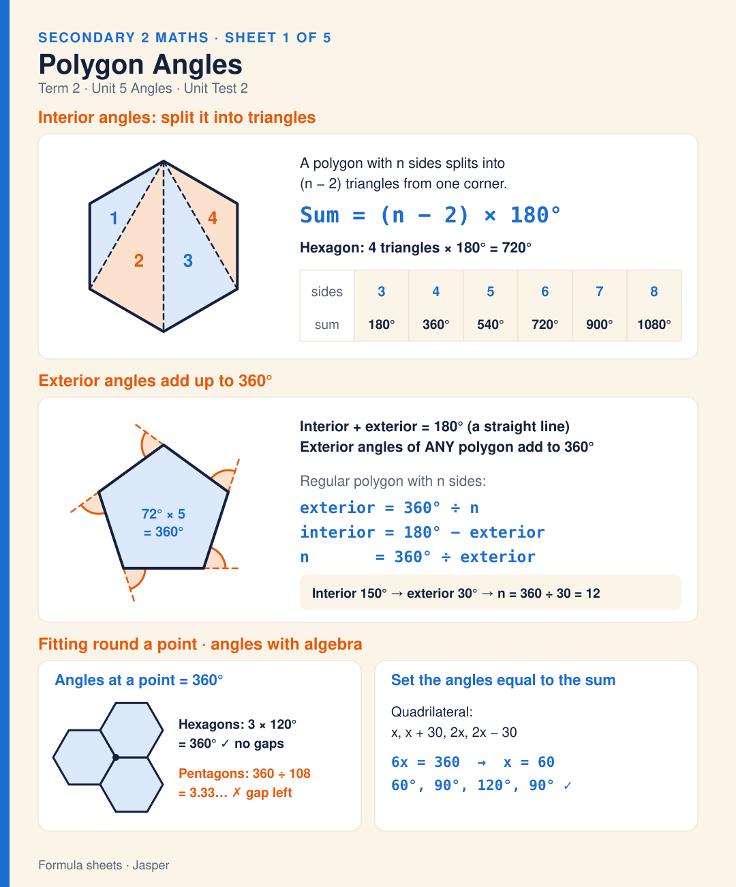

Sheet 1
Polygon Angles
Interior angles: a polygon with n sides splits into (n − 2) triangles, so the angles add up to (n − 2) × 180° (hexagon: 4 × 180° = 720°). Exterior angles of any polygon add up to 360°, and interior + exterior = 180°. For a regular polygon: exterior = 360° ÷ n, interior = 180° − exterior, n = 360° ÷ exterior (interior 150° → exterior 30° → 12 sides). Shapes fit round a point when their angles make 360°: three hexagons (3 × 120°) do, pentagons (108°) leave a gap. With algebra, set the angles equal to the sum: x, x + 30, 2x, 2x − 30 gives 6x = 360, x = 60.
Caption & source →